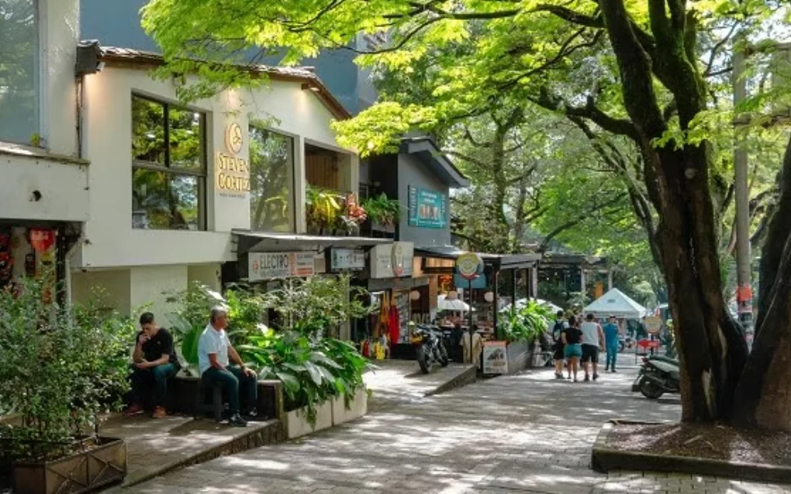
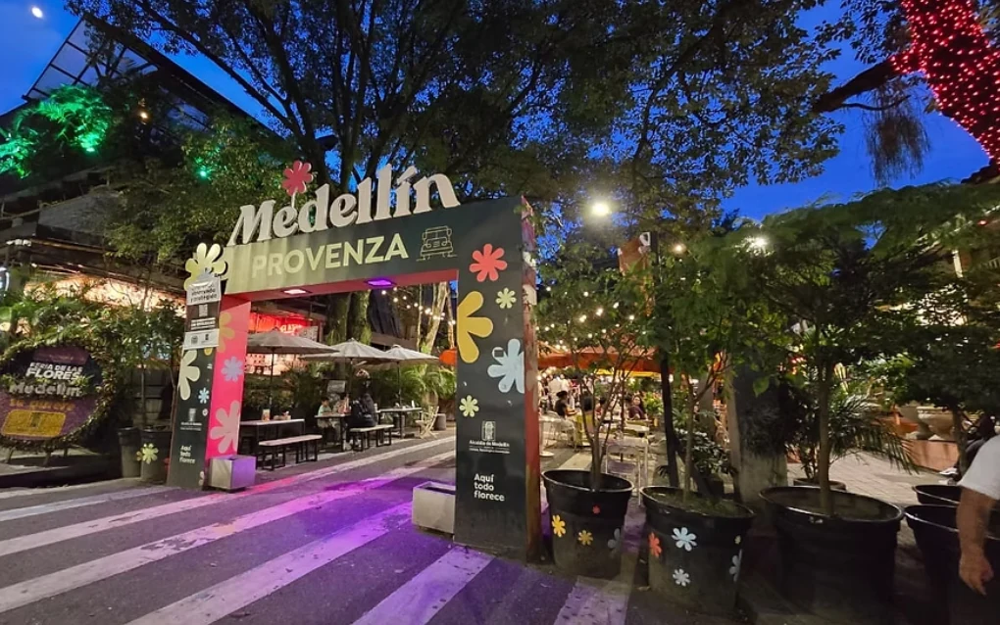
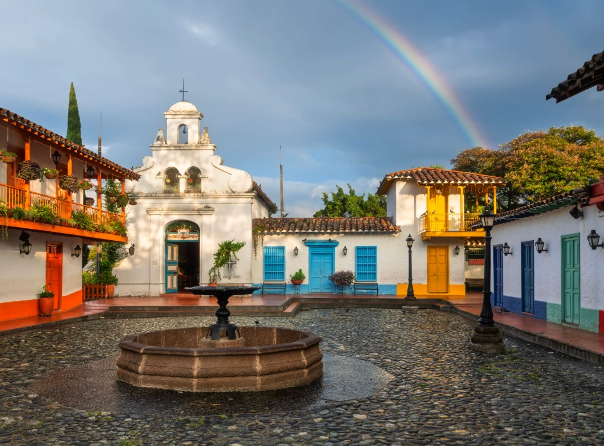
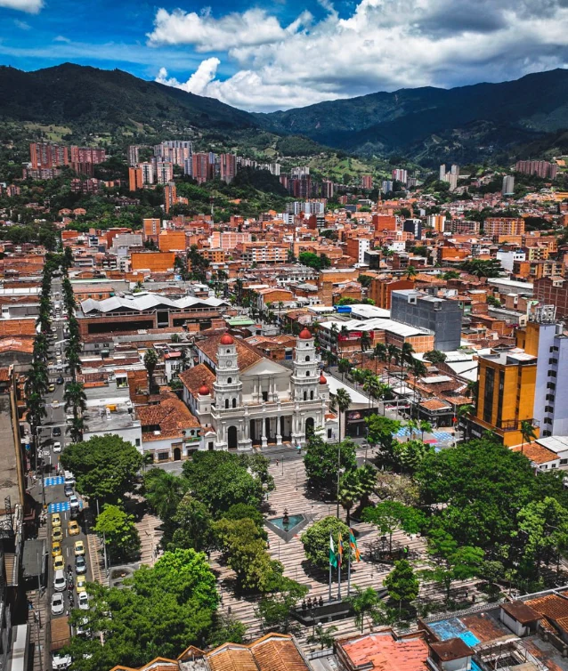
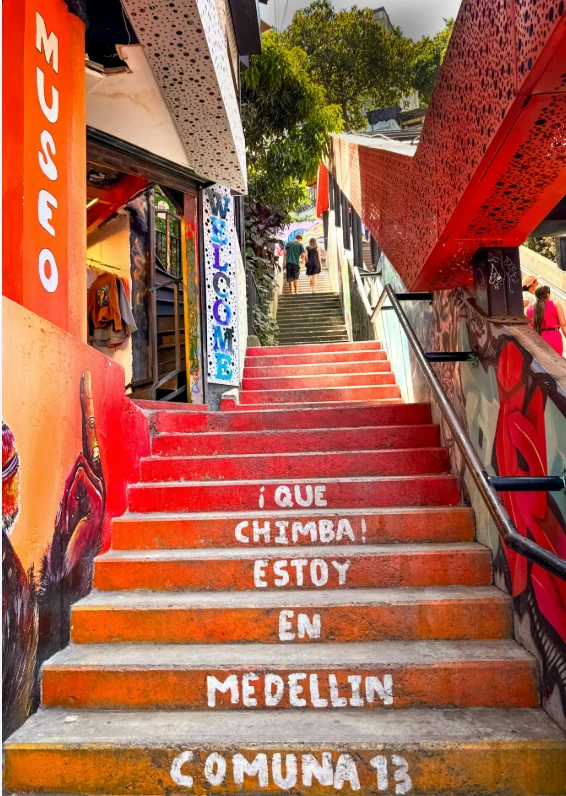
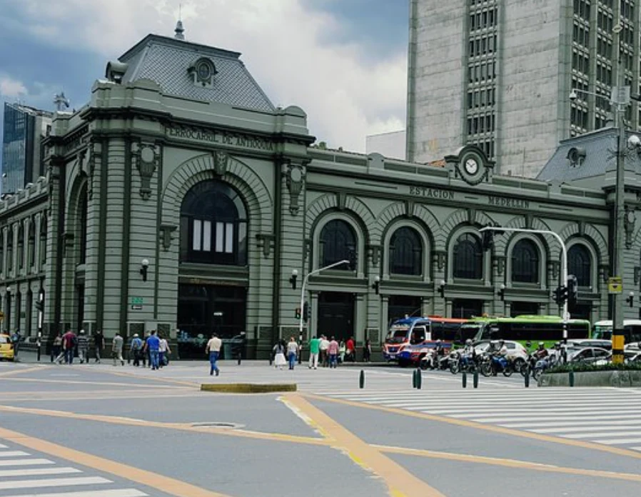

The best base is not necessarily the most famous one. It is the one that reduces transfers and fits your itinerary, nightlife and length of stay.

First visit + structure
The easiest choice if you want restaurants, hotels, nightlife and simple access to ride-hailing.
Parque Lleras · Avenida El Poblado · Calle 10 corridor
First visit · short stays · travelers who want structure
Easy by taxi/app; Poblado metro station helps with several routes
Dann Carlton Medellín
Also compare The Charlee if nightlife is a priority

Food + design
The best axis if you want to walk between cafés, restaurants and more design-led hotels.
Provenza · Manila · Calle 10A / Calle 14
Couples · food · design · digital nomads
Very walkable inside the area; taxi/app elsewhere
Click Clack / Landmark
Elcielo works well when a premium food experience matters

More local + calm
Leafy and residential with good cafés and restaurants. It is the clearest counterpoint to Poblado.
Segundo Parque · Avenida Nutibara · La 70
Repeat visitors · families · less touristy stays
Good metro access at Estadio/Suramericana plus ride-hailing
Inntu Hotel
The only hotel in our eight-property selection directly in Laureles

Long stays + local routine
South of Poblado, it works for travelers who prefer residential life, local food and less tourist pressure.
Central Envigado · La Frontera · southern corridor
Long stays · couples · repeat visitors
Ride-hailing works well; metro helps, but some hotels sit outside the most walkable axis
York Medellín
York is in southern El Poblado near this axis, not inside Envigado

Value + residential
An option for longer stays, apartments and a more local rhythm with less price pressure.
Loma de los Bernal · Fátima · Cerro Nutibara area
Long stays · budget · residential pace
Good by ride-hailing; exact micro-location matters more than in Poblado or Laureles
Stay strategy
Our eight-hotel curation is concentrated in other areas; here I would compare apartments and long-stay options

Culture by day
Botero Plaza, the Museum of Antioquia and major urban history are here. Visit it, yes; use it as a first base, I would not.
Botero Plaza · Parque Berrío · Palace of Culture
Daytime culture · photography · history
Excellent metro access for going in and out during the day
Better to visit than sleep
Use Poblado or Laureles as a base and come downtown for the cultural blocks
| Area | Profile | Best for | Mobility |
|---|---|---|---|
| El Poblado | First visit + structure | First visit · short stays · travelers who want structure | Easy by taxi/app; Poblado metro station helps with several routes |
| Provenza / Manila | Food + design | Couples · food · design · digital nomads | Very walkable inside the area; taxi/app elsewhere |
| Laureles | More local + calm | Repeat visitors · families · less touristy stays | Good metro access at Estadio/Suramericana plus ride-hailing |
| Envigado | Long stays + local routine | Long stays · couples · repeat visitors | Ride-hailing works well; metro helps, but some hotels sit outside the most walkable axis |
| Belén | Value + residential | Long stays · budget · residential pace | Good by ride-hailing; exact micro-location matters more than in Poblado or Laureles |
| Downtown / La Candelaria | Culture by day | Daytime culture · photography · history | Excellent metro access for going in and out during the day |